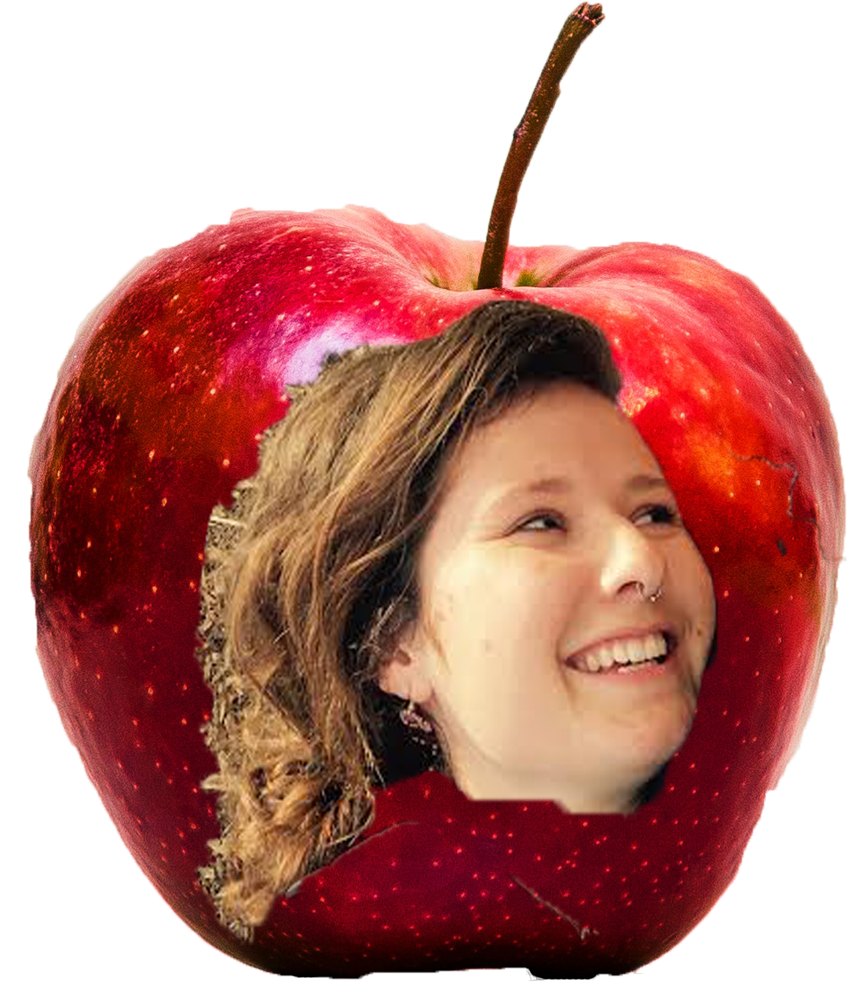

- We are a community of students committed to sharing knowledge about food justice and sustainable agriculture through experiential learning.
- Meet us!
Interested in joining us?
- Hi, I’m Hayley D!
- This year, I’m a senior history major concentrating in environmental and food history. I got involved with SOGA after taking the IOG DeCal, and then I was fortunate enough to be the Programs Intern for summer & fall 2016. My favorite part about SOGA is the passionate community of positive, inquisitive, and hard-working students who inspire me to fight for a more sustainable and just food system. I love SOGA!

- Hi, I’m Hayley C!
- I’m a fourth year Sustainable Environmental Design student with a focus in urban ecology and food systems. I’ve taught numerous Decals and held management positions at SOGA for the past 3 years. Join me in the garden for a conversation over iced tea, an afternoon of garden work, or a Sunday workshop!
- Hi, I’m Tess!
- I’m a third year student studying environmental public health and sustainable urban planning under the Conservation and Resource Studies major. Before becoming the Programs Intern, I was a student in BUGI, one of SOGA's decal classes. I hope to backpack the John Muir Trail soon, but before I can go, I need to find a way to carry enough hummus to sustain me, because hummus is my favorite food of all time
- Hi, I’m Grace!
- I am a junior transfer student majoring in Conservation & Resource Studies, specifically interested in community-based land management, agroecology, and land justice. I have been working at SOGA since May as summer operations manager and have remained an active member since. My favorite days this summer were spent learning from students and community members with our hands in the dirt. I am currently most involved with organizing to stop development of SOGA and Oxford Tract so feel free to reach out with questions about that!
- Hi, I’m Christina!
- I am a fourth year Environmental Sciences, Environmental Economics & Policy double major with a Spanish Literature minor.... BUT what I really love is sustainable agriculture, especially food justice and urban agriculture. I got involved in SOGA after studying agronomy abroad in Santiago, Chile for a year. I missed the experimental and experiential learning there, and now I love helping facilitate DeCals we have at SOGA.